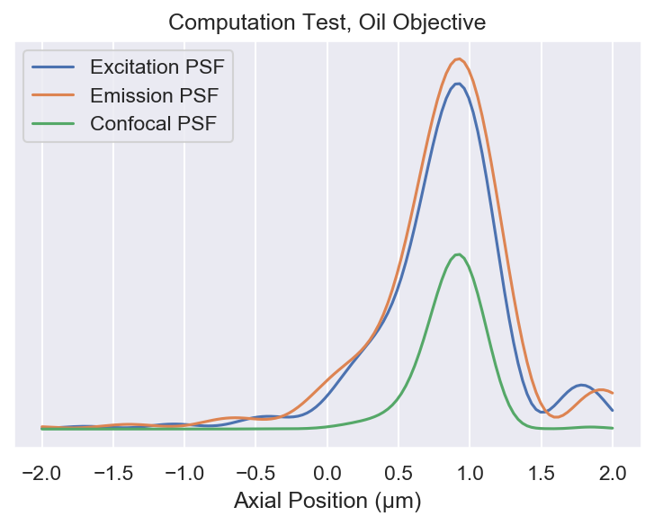
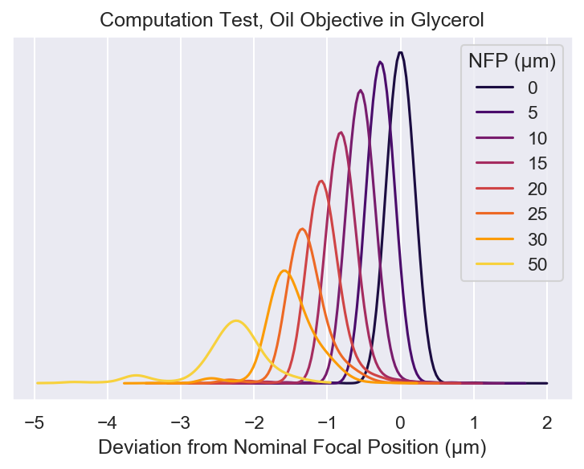
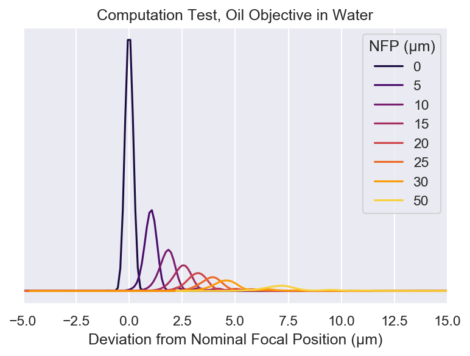
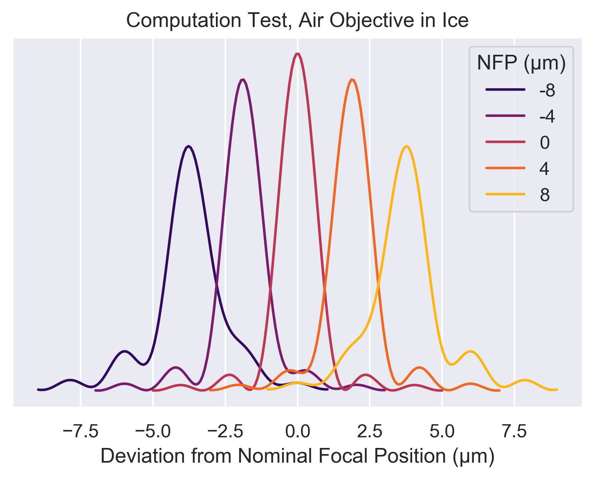
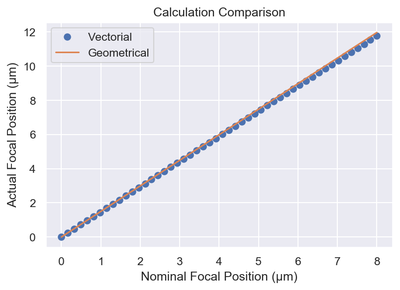
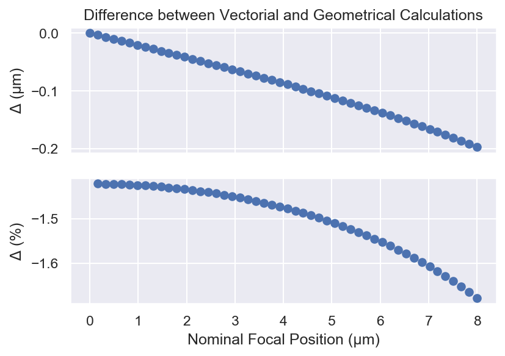

A question of index
Something I learned the hard way during my post-doc is the effect index mismatching can have on images taken with high NA air objectives (in my case a Nikon CFI L Plan EPI CRB 100X 0.85 NA lens). Many1 previous2 authors3 have commented on and analyzed degradation of image quality when the index for which an objective is designed does not match the one in which it is used. Even so, many users of optical microscopes remain unaware of this issue. The problems induced by index mismatch can be summarized as follows (where $n_{obj}$ is the design index and $n_{sample}$ is the mounting index):
- NA is reduced to the index of the specimen, i.e. $NA = n_{sample}$, when $n_{obj} > n_{sample}$
- Compression of the image when $n_{obj} < n_{sample}$ and a concomitant reduction in expected axial resolution
- Increasing spherical aberration as the objective’s focus is moved deeper into the sample when $n_{obj} \neq n_{sample}$
To explain the first problem imagine we are imaging a point source radiating spherical waves of light embedded in a medium of index $n_{sample}$ near the interface with a medium of index $n_{obj}$ (c.f. Figure 1). After a certain axial distance the spherical wave encounters the interface and refracts. Appealing to geometrical optical arguments we say that only the bottom hemisphere of light can be captured. The maximum angle of rays that can be captured are rays that propagate along the interface (i.e. at an angle of 90° relative to the interface normal) and these are refracted at an angle $\theta_c = \arcsin(n_{sample}/n_{obj})$. According to Snell’s law and the definition for NA this means that the maximum possible NA for this configuration is $NA = n_{obj} \sin(\theta_c) = n_{sample} \sin(\pi/2) = n_{sample}$
{kind=link}
A point source emitting from a lower index material to a higher index material
The second problem, when $n_{obj} < n_{sample}$, is trickier and I covered it in some detail in the supplemental material of our cryo paper. Looking at the OTF support in the $k_xk_z$ plane, as shown in Figure 2, we can see that the OTF gets “squished” in the $k_z$ direction. A key insight is that while the lateral resolution is independent of index due to Snell’s law, $NA = n_{obj}\sin(\theta_{obj}) = n_{sample}\sin(\theta_{sample})$, the axial resolution is not.4 Axial resolution (sometimes termed depth of field or depth of focus) for high NA systems has been derived before5 and can be modified for differing indices of refraction to be
$$ \Delta z = \frac{\lambda}{n_{sample} - \sqrt{n_{sample}^2 - NA^2}} $$
and herein lies the observed squishing effect6: as $n_{sample}$ increases relative to $NA$ the denominator decreases and $\Delta z$ increases.
{kind=link}
OTF support for fixed NA and variable index of refraction ($n$), specifically comparing air ($n=1$) to vitreous ice ($n=1.3$)
Investigating the third problem will require real math based on the work of Török1, Török2, and Egner.3
Focal plane displacement in mismatched media, a Vectorial Calculation
I’ll be following the notation of Egner3. Equation 9 gives the vectorial point spread function in terms of three diffraction integrals. Note that for on axis light ($x=0$ and $y=0$) the integrands of $I_1(\vec{r})$ and $I_2(\vec{r})$ are $0$ and $I_0(\vec{r})$ reduces to
$$ I_0(z) = \int_0^\alpha \sqrt{\cos(\theta_1)}\sin(\theta_1)(\tau_s+\tau_p \cos(\theta_2))\exp(ik(\Phi(NFP)+n_2z\cos(\theta_2)))d\theta_1 $$
Where
$$ \Phi(NFP) = -NFP(n_1\cos\theta_1-n_2\cos\theta_2) $$
$k$ is the wavenumber of the light rays in vacuo, i.e. $k = 2\pi/\lambda$. $\alpha$ is the aperture semi-angle of the lens, i.e. $\text{NA}=n_1 \sin\alpha$. Note that $n_1 = n_{obj}$ and $n_2 = n_{sample}$.
We can now implement these functions in Python.
Python time
%pylab inline
import scipy.integrate
import scipy.optimize
import seaborn as sns
sns.set()
def complex_quadrature(func, a, b, **kwargs):
"""scipy.integrate.quad doesn't deal with complex numbers, so this hack does"""
def real_func(x):
return real(func(x))
def imag_func(x):
return imag(func(x))
real_integral = scipy.integrate.quad(real_func, a, b, **kwargs)
imag_integral = scipy.integrate.quad(imag_func, a, b, **kwargs)
return (real_integral[0] + 1j*imag_integral[0], real_integral[1:], imag_integral[1:])
@vectorize
def i0(z, NFP, n1, n2, NA, wl):
"""This calculates e-field amplitude _relative to_ NFP, only along the z axis with x, y = 0, 0"""
theta_max = arcsin(NA / n1)
def integrand(theta1):
sin_t1 = sin(theta1)
theta2 = arcsin(n1 * sin_t1 / n2)
sin_t2 = sin(theta2)
cos_t1 = cos(theta1)
cos_t2 = cos(theta2)
ts = 2 * sin_t2 * cos_t1 / sin(theta1 + theta2)
tp = ts / cos(theta1 - theta2)
k = 2 * pi / wl
phi = -NFP * (n1 * cos_t1 - n2 * cos_t2)
# make sure i is complex
i = exp(1j * k * (phi + n2 * z * cos_t2))
i *= sqrt(cos_t1) * sin_t1 * (ts + tp * cos_t2)
return i
return complex_quadrature(integrand, 0, theta_max)[0]
A short test to see if the calculation works using the example from Egner and Hell a 1.518 oil objective 1.47 NA
z = np.linspace(-2, 2, 128)
a_exc = i0(z, -15, 1.518, 1.47, 1.33, 0.514)
a_em = i0(z, -15, 1.518, 1.47, 1.33, 0.59)
fig, ax = plt.subplots(dpi=150)
ax.plot(z, abs(a_exc)**2, label="Excitation PSF")
ax.plot(z, abs(a_em)**2, label="Emission PSF")
ax.plot(z, abs(a_exc)**2 * abs(a_em)**2, label="Confocal PSF")
ax.legend()
ax.yaxis.set_major_locator(plt.NullLocator())
ax.set_xlabel("Axial Position (µm)")
ax.set_title("Computation Test, Oil Objective")

# we need an esimate of the focal shift in order to reduce computation time
def otf_ratio(n1, n2, NA):
"""The OTF ratio as calculated from the geometrical proof"""
def func(n):
# fmax takes care of limiting NA
return n - sqrt(np.fmax(0, n**2 - NA**2))
return func(n1) / func(n2)
def _find_afp(NFP, n1, n2, NA, wl_ex, wl_em=None, *, res=32, width=5, ax=None):
"""Find the _apparent_ focal position based on the nominal focal position"""
# if no emission wavelength is given, then calculate the widefield PSF
if wl_em is None:
def i0_min(z):
return -abs(i0(z, NFP, n1, n2, NA, wl_ex))**2
# otherwise calculate the confocal PSF
else:
def i0_min(z):
toreturn = -abs(i0(z, NFP, n1, n2, NA, wl_ex))**2
return toreturn * abs(i0(z, NFP, n1, n2, NA, wl_em))**2
# calculate the approximate focal shift, so the optimization is close to the optimum
focal_shift = otf_ratio(n1, n2, NA)
# make a rough low res estimate relative to the estimated focal shift
low_res_z = np.linspace(-width, width, res) + NFP * (focal_shift - 1)
low_res_a = -i0_min(low_res_z)
low_res_max_idx = low_res_a.argmax()
# optimize to find the proper location of the optimum
high_res_max = scipy.optimize.minimize_scalar(i0_min, bounds=(low_res_z[low_res_max_idx - 1], low_res_z[low_res_max_idx + 1]), method='bounded', options=dict(xatol=1e-10))
# looks like we failed to find a maximum
if not high_res_max.success:
raise RuntimeError(high_res_max.message)
# make a plot
if ax is not None:
ax.plot(low_res_z, low_res_a)
ax.axvline(high_res_max.x, c="r")
max_intensity = -high_res_max.fun
# return the shifted AFP
return high_res_max.x + NFP, max_intensity
def find_afp(NFP, *args, **kwargs):
"""A simple version to vectorize over z, for convenience"""
try:
return np.array([_find_afp(z, *args, **kwargs) for z in NFP])
except TypeError:
return _find_afp(NFP, *args, **kwargs)
Testing
On page 409 of Egner3 there are some example calculations that we can repeat to test the validity of the calculations.
with sns.color_palette("inferno"):
# our confocal calculations
fig, ax = plt.subplots(dpi=150)
nfps = (0, 5, 10, 15, 20, 25, 30, 50)
glycerol_cf = find_afp(
nfps,
1.518, 1.473, 1.3, 0.514, 0.59,
res=128, width=2, ax=ax
)
# values taken from table 20.1 of Egner and Hell
glycerol_lit = np.array((
(0, -0.28, -0.55, -0.83, -1.1, -1.33, -1.54, -2.30),
(1, 0.95, 0.91, 0.78, 0.62, 0.5, 0.4, 0.31)
)).T
# percent differences between our calculations and theirs for focal shift
print((glycerol_lit[:, 0] - (glycerol_cf[:, 0] - (0, 5, 10, 15, 20, 25, 30, 50))) / glycerol_lit[:, 0] * 100)
# percent differences between our calculations and theirs for peak intensity
print((glycerol_lit[:, 1] - glycerol_cf[:, 1] / glycerol_cf[:, 1].max()) / glycerol_lit[:, 1] * 100)
ax.yaxis.set_major_locator(plt.NullLocator())
ax.set_xlabel("Deviation from Nominal Focal Position (µm)")
for line in ax.get_lines():
if len(line.get_data()[0]) == 2:
line.remove()
ax.set_title("Computation Test, Oil Objective in Glycerol")
ax.legend(nfps, title="NFP (µm)")
[ inf 2.2220463 0.62956575 1.5641702 1.51523215 -0.91086836
-2.9878027 2.47268137]
[ 0. -2.05250791 2.91190777 2.94368608 1.49427111 6.83299954
14.99787706 39.09604286]

with sns.color_palette("inferno"):
# our confocal calculations
fig, ax = plt.subplots(dpi=150)
nfps = (0, 5, 10, 15, 20, 25, 30, 50)
water_cf = find_afp(
nfps,
1.33, 1.473, 1.3, 0.514, 0.59,
res=256, width=15, ax=ax
)
# values taken from table 20.1 of Egner and Hell
water_lit = np.array((
(0, -1.0, -1.83, -2.57, -3.3, -4.02, -4.72, -7.57),
(1, 0.60, 0.39, 0.285, 0.23, 0.19, 0.166, 0.11)
)).T
# percent differences between our calculations and theirs for focal shift
print((water_lit[:, 0] + (water_cf[:, 0] - (0, 5, 10, 15, 20, 25, 30, 50))) / water_lit[:, 0] * 100)
# percent differences between our calculations and theirs for peak intensity
print((water_lit[:, 1] - water_cf[:, 1] / water_cf[:, 1].max()) / water_lit[:, 1] * 100)
ax.yaxis.set_major_locator(plt.NullLocator())
ax.set_xlabel("Deviation from Nominal Focal Position (µm)")
for line in ax.get_lines():
if len(line.get_data()[0]) == 2:
line.remove()
ax.set_xlim(-5, 15)
ax.set_title("Computation Test, Oil Objective in Water")
ax.legend(nfps, title="NFP (µm)")
[ inf -3.89876815 -1.16698752 0.24182932 1.60682485 2.02297875
3.0281091 5.03027355]
[ 0. 48.28097585 59.70939519 65.5089603 70.36385208 72.25077729
75.80157613 81.9156686 ]

Our simulations match the reported focal length shift to a few percent. However, there is larger error between the our intensity and theirs.
Simulations for the Cryo-scope
Here the objective is a 0.85 NA air objective and the sample medium is vitreous ice so $n_1=1$ and $n_2=1.3$.
with sns.color_palette("inferno"):
fig, ax = plt.subplots(dpi=300)
nfps = (-8, -4, 0, 4, 8)
find_afp(nfps, 1.0, 1.3, 0.85, 0.52, res=128, ax=ax)
ax.yaxis.set_major_locator(plt.NullLocator())
ax.set_xlabel("Deviation from Nominal Focal Position (µm)")
for line in ax.get_lines():
if len(line.get_data()[0]) == 2:
line.remove()
ax.set_title("Computation Test, Air Objective in Ice")
ax.legend(nfps, title="NFP (µm)")

Clearly, spherical aberrations start to become problematic when you’re more than 10 µm from the best focal position (and this effect is worse the larger the mismatch between refractive indices).
One question we can ask is: how well does our geometric argument fare against the more complex vectorial calculation? We’ll calculate the actual focal position with the complex calculation for multiple nominal focal positions and compare the to the simpler calculation to see the size of the deviation.
# make some NFPs in µm
NFP = np.linspace(0,8)
# calculate the AFPs
AFP = find_afp(NFP, 1.0, 1.3, 0.85, 0.52)
# geometrical stretch
geom_m = otf_ratio(1.0, 1.3, 0.85)
fig, ax = plt.subplots(dpi=150)
ax.plot(NFP, AFP[:, 0], "o", label="Vectorial")
ax.plot(NFP, NFP * geom_m, label="Geometrical")
ax.set_ylabel("Actual Focal Position (µm)")
ax.set_xlabel("Nominal Focal Position (µm)")
ax.set_title("Calculation Comparison")
ax.legend()

# geometrical stretch
geom_m = otf_ratio(1.0, 1.3, 0.85)
fig, (ax1, ax2) = plt.subplots(2, dpi=150, sharex=True)
ax1.plot(NFP, AFP[:, 0] - NFP * geom_m, "o")
ax2.plot(NFP[1:], 100*((AFP[:, 0] - NFP * geom_m)/AFP[:, 0])[1:], "o")
ax1.set_ylabel("$\Delta$ (µm)")
ax2.set_ylabel("$\Delta$ (%)")
ax2.set_xlabel("Nominal Focal Position (µm)")
ax1.set_title("Difference between Vectorial and Geometrical Calculations")

slope_ratio = (AFP[1:, 0] / NFP[1:]).mean() / geom_m
print(f"The ratio between the complex slope and the simple slope is {slope_ratio:.0%}")
The ratio between the complex slope and the simple slope is 99%
At least as far as focal position is concerned the simple calculation is more than adequate over short distances.
Conclusions
When talking about three dimensional imaging it seems that NA alone doesn’t tell the full story.7 As shown above, NA is the sole determinant of lateral resolution but the index of the sample comes into the equation for axial resolution. To put it another way, the lateral resolution of a 0.95 NA water objective is exactly the same (in theory) as the lateral resolution of 0.95 NA air objective but the axial resolution of the water objective is more than 70% worse! Moreover, index mismatch adds spherical aberration to the images. This can be alleviated to a certain extent with confocal imaging (c.f. Figure 1). Even so, it is to the microscopist’s advantage to use an objective with a design index as close as possible to the sample of interest (except in the case of TIRF microscopy).
If you want to download the Jupyter notebook I used to create this post you can do so here.
-
P. Török, P. Varga, Z. Laczik, G. R. Booker, Electromagnetic diffraction of light focused through a planar interface between materials of mismatched refractive indices: an integral representation. J. Opt. Soc. Am. A, JOSAA. 12, 325–332 (1995). ↩︎
-
P. Török, S. J. Hewlett, P. Varga, The role of specimen-induced spherical aberration in confocal microscopy. Journal of Microscopy. 188, 158–172 (1997). ↩︎
-
A. Egner, S. W. Hell, in Handbook Of Biological Confocal Microscopy (Springer, Boston, MA, 2006; https://link.springer.com/chapter/10.1007/978-0-387-45524-2_20), pp. 404–413. ↩︎
-
It should be noted that Fresnel reflections at the interface increase with increasing angle such that the apodization function of the pupil rolls off much faster. Thus while the lateral support of the OTF is unchanged its actual shape will be different and will result in lower effective resolution at lower signal-to-noise ratios. ↩︎
-
C. J. R. Sheppard, Depth of field in optical microscopy. Journal of Microscopy. 149, 73–75 (1988). ↩︎
-
Squishing in frequency which is expansion in real space. ↩︎
-
This is definitely true for two dimensional imaging as well: characterizing the frequency response of any system with a single number is always a bad idea. In practice, how the OTF approaches zero transmission is as import, if not more so, than where it hits zero. If your microscope transmits high spatial frequencies, but strongly attenuates them, you’ll need a high, and in some cases an unphysically high, signal to noise ratio to make use of them. ↩︎